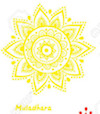

The Chakras
The Sanskrit word Chakra literally translates to wheel or disk.
In yoga, meditation, and Ayurveda, this term refers to wheels of energy throughout the body. There are seven main chakras, which align the spine, starting from the base of the spine through to the crown of the head. To visualize a chakra in the body, imagine a swirling wheel of energy where matter and consciousness meet. This invisible energy, called Prana, is vital life force, which keeps us vibrant, healthy, and alive.
 Root Chakra
Root Chakra - Connects all of your energy with the Earth, which is called grounding.
 Sacral
Sacral - Home of the creative life force energy that helps you enjoy your life here on Earth.
 Solar Plexus
Solar Plexus - Seat of your personal power. You can physically feel confidence and wisdom in its location.
 Heart
Heart - Love for others and love for yourself, also associated with health and healing.
- Throat
- Lets you speak your truth with clarity. Connected to the compassion and love you have for yourself and others.
 3rd Eye
3rd Eye - Receives information from sources outside of the five senses.
 Crown
Crown - Consciousness energy that connects us to the entire universe. The seed of a universal energy.